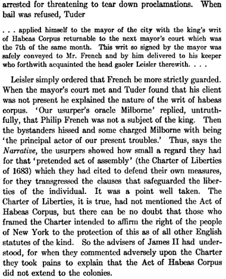
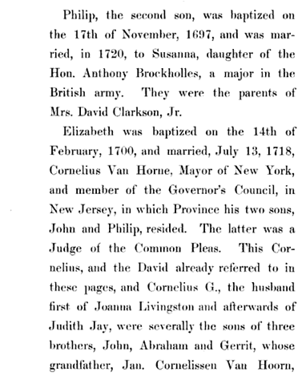
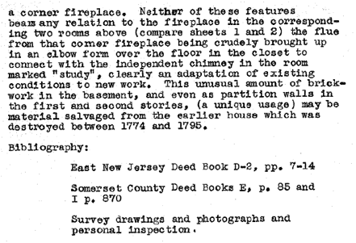

French Family Association
The Official Website of the Surname French
Chart #131, Philip and John French,
Kelsale, Suffolk, England
London, England
New York City, New Brunswick, NJ
Wapping Street, London, in earlier days
This chart updated by Mara French on 2/9/10. Numbers in brackets [ ] show sources and refer to the bibliography at the end of this chart. An asterisk (*) shows continuation of that line. Send any corrections or additions to this chart to marafrench@mindspring.com. Revisions: 1994, 1999, 2010.
Contents
NOTE: Although not used as part of their official names, I will use the roman numerals, I, II, III, etc. to distinguish each generation of same-named individuals, when needed to provide clarity, i.e., Philip ( I ).
1.1 Philip's father
2.1
Philipp French ( I ), b. before 1640 in London, m1.
Elizabeth Crawley, m2. Rebekah
3.1
Philip French ( II ), b. 13 Feb 1666/67 in London, m.
Antje Phillipse, to NYC
4.1
Philip French d. young.
4.2 Phillipus French ( III ), b. 1697
in NYC, m1. Susanna Brockholles (had 4 children), m2.
Anne Billopp Farmar (had 6
children), purchased land in New Brunswick, NJ
5.1
Anna French, b. 1722 in NYC, m. David Van Horne
5.2
Susanna French, b. 1723 in NYC, m. William Livingston
5.3
Elizabeth French, b. 1724 in NYC, m. David Clarkson
5.4
Maria French, b. 1726, m. William Browne
5.5 Philippus French ( IV ), b. 1733
in NYC, no heir
5.6 Farmar French, b. 1734 in NJ, died young.
5.7 Farmar French, b. 1736 in NJ
5.8 Catheran French, b. 1739 in NJ
5.9 Adolphus French, b. 1741 in NJ
5.10
Ann French, b. 1742 in NJ
4.3
Elizabeth French, b. 1700 in NYC, m. Cornelius Van Horne
4.4 Margreta French, b. 1701 in NYC, d. unmarried
4.5
Anne French, b. 1705, m. Joseph Reade
3.2
John French, b. after 1667, m. Mary White, to NYC
4.1 had issue, 3 daughters, names
unknown
3.3 Rebekah French, b. 1677 in London, remained in England, d.
before 1697
3.4
William French, b. 1681 in London, remained in England
4.1
Rebecca French, b. 1707 in Kelsale, Suffolk, England
4.2
William French, b. 1708 in Kelsale, Suffolk, England
2.2
Anne French, b. ca. 1650, m. Pigeon
First Generation
1.1* Philipp French’s father. “A” Thomas French was residing in Kelshall in 1641 and paid for his lands there a subsidy to the King [11]. There is no proof as to this being Philip’s father or not.
1.2 Philipp’s uncle, whom Philipp talks about in his will. He might have had a son, John, who is mentioned in Philipp’s will as Philipp’s cousin.
Second Generation
2.1* Philipp French ( I ), b. before 1640 and lived at the Hermitage, near London, England, d. 1703/4 living at Kelshall, County Suffolk, England, m1. Elizabeth Crawley (or Crowley) on 10 Jun 1661 at Saint Giles Cripplegate, London, England, LDS film #M022431. Elizabeth Crawley was b. bef. 1645, living in London, England, d. probably in London. Philipp m2. Rebekah, and had children Rebekah and William French.
The date of this following transaction was 22 Jan 1674, at which time Phillip ( II ) of NY was about 7 years old. The proceedings occurred 1676 and referred to "Thomas Bell and Phillip French & Comp of London Merchants." Phillip French ( I ) was a London Merchant. Thomas Bell, Philip French, and Annetje Philipse, are all mentioned in the Philipse Manor Hall at Yonkers, New York. Philipse Manor Hall is at 29 Warburton Ave., Yonkers, NY, constructed in the 1690’s by Dutch nobel Frederick Philipse I, declared a National Historic Landmark in 1961. Frederick Philipse’s daughter, Annetje, married Philip French II.
Records show Philip had business with a Samuel Sheafe in Boston, having sent Daniel Jefferies there in 1677 to "regulate" account between his master, Philip French of London Merchant and Samuel Sheafe in Boston [27].
St. Giles Cripplegate, London, England, where Philipp m. Elizabeth in 1661, and also where Oliver Cromwell married in 1620. Church today shown below.

View of the Barbican (double tower outer defense of London) and Saint Giles Cripplegate to the left.
Ref. [27], located and purchased the will of the elder Phillip French who apparently retired to Kelsale.
Note: Information in this will contradicts information found in "Samuel the Joiner” of Connecticut, FFA Chart #11, about Philip French who was bap. 13 Nov 1625 in Saxmundham, Suffolk, England, who m. Mary.
Philip French of this chart, FFA Chart #131, according to his will in 1697, had only 3 children: Philip, John, and William. Philip names Rebekah as his wife. Philip and John were Philip’s oldest sons, but they lived in NYC. Surely, if he had had other sons, he would have given to them, as he did to his youngest son, William, who was under 21 years of age. It is assumed that daughter Rebekah died before 1697 when her father’s will was written.
St. Mary’s and St. Peter’s Church, Kelsale, Suffolk, England, where Philip was buried.
Philip French ( I ) m2. Rebeckah or Rebekah [11] and had 3 children mentioned in his will: Phillip of New York his eldest son, John of New York his second son, and William, his youngest son. He also mentioned his sister, Ann Pigeon. Ref. [7] shows a Rebeccah French, widow, of Saxmundham, 7 Jan 1728. Phillip wrote his will on 12 Feb 1697/8 while living in Kelshall (now Kelsale), died 4 Feb 1703/4 at age ca. 78 and is buried at the church of Kelshall [1]. Abstract below from Ref. [35] and [37].
Who Jeremiah was, we do not know, but there are several men named Jeremiah who immigrated to NJ. We suppose he was Philip's uncle who had the son, John, mentioned as Philip's cousin in his will; however, there is absolutely no proof to this. This is not the Jeremiah who lived in Bradford Abbas, County Dorset and is part of FFA Chart #11.
The original
of this will was located at the Public Record Office, The National Archives, England.
Transcription/Abstraction by Jeanette
French
[J French NOTE: I will use the
modern alphabet in this abstraction/transcription.
Although not found in the original, I will present the will in paragraph form to make reading and locating
information easier]
"___
Philippi Frenchar and Frelander
"In
the Name of God Amen the twefth day of the month of
February in the ninth year of the reigne of our Sovereigne Lord William the third by the grant of God of
England - - Scotland France King Defender of the faith . . . I Phillip French
of Kelshall in the county of Suff
Esq being of good and perfect mind and memory praised
be almighty God and calling to remembrance the certainty of Death and the
uncertainty of the time thereof I make ordain and declare this my last will and
testament. . . and my corruptible body to the earth to
be buried in Christian buriall at the discretion of
my Executor hereafter named and now for the settling of my goods and temporall estate which it has pleased the Lord to lend me
in this world I doe give and dispose the same as followeth
"Imprin__ I give and bequeath unto Rebekah
French my loving wife one annuity or yearly rent charge of sixty pounds per
annum during the term of her naturall live to be paid
at the _____ most usuall feast Days or times of payment_______
year that is today the feast of St John Baptist the nativity of our Lord Christ
by even and equall portions ________ without any deduction
for taxes ______ or other charges or reprizes
whatsoever and to be chargeable upon issuing and going out of all my messuage Lands tenements and heriditaments
whatsoever both freehold and coppyhold herein devised
to Phillip French my eldest son and the heirs males of his body the first payment
thereof to be made and begin at which of the said feast days shall first happen
next after my decease and
"I
give and bequeath unto the said Rebekah French my
loving wife all the furniture in the parlor chamber as it now stands and one
hundred pounds of lawfull English money and also one paire of sheets four dozen of napkins three pair of pillowbeers six towells four
table cloaths and four sideboards cloaths
to be chosen by her out of my linen ________
"I
give and bequeath unto the said Rebekah French my
loving wife and Phillip French my son all my plate and rings which shall be in
my house at Kelshall in the county of Suff at my decease to be equally divided between them all which
gifts and legacies given unto the said Rebekah French
my wife are upon condition that she shall not claim any Dower or thirds out of
my freehold or Coppyhold messuage
Lands tenements or hereditaments whatsoever or wheresoever but shall release her Dower right and tythe of Dower or thirds in and to the same to my said son
Phillip his heirs or assignes or to such other person
or persons to whom I shall give the same and their heirs upon reasonable
request to be made to her for that purpose and if any said wife shall claim any
Dower or thirds out of any part of my estate freehold or coppyhold
or shall not release the same upon request as aforesaid then I will that all
the bequests herein given to her shall be absolutely void and my mind and will
is that if it shall happen the said annuity or yearly rent of sixty pounds or
any part or parts thereof to be behind or unpaid. . ."
[There follows the exact procedures to
be used to obtain payment of the annuity or to obtain equivalent value from the
estate.]
"I
give and bequeath unto John French my son the summe
of one thousand pounds to be paid him in current money in New York in America
by the said Phillip French my eldest son within ________ months next after my
decease _______ in case default of payment shall be made of the said money then
I will that it shall and may be lawfull to and for
the said John French my sonn his executors and assignes into all or any of my lands and tenements both
freehold and coppyhold in England devised to the said
Phillip French my sonn and the heirs of his body to
enter and the same to have hold and enjoy untill the sume of six hundred pounds of lawfull
English money with costs and damages shall be fully paid and satisfied unto him
the said John French his executors administrators and assignes
"_______
I give and bequeath unto the said Phillip French my sonn
and his heirs all my messuages Lands tenements and hereditaments whatsoever situate lying and being in Knoddishall or elsewhere late in the occupation of John Savoer or his assignes and now in
the occupation of Joseph Albynoth purchased of
Jeremiah French to have and to hold the same ________ their and every of their
appurtenances unto the said Phillip French my sonn
and to his heirs and assignes forever upon condition
that he the said Phillip French my son his heirs and assignes
shall well and truly pay out of the afore bequeathed premisses
unto William French my youngest sonn the summe of Eight hundred pounds of lawfull
English money when he shall accomplish his full age of one and twenty years . .
."
[There follows further directions to
cover the situation where his wife Rebekah refuses to
release her Dower right and title of Dower or thirds—the most significant
of which is the following creation of an annuity for the minor son, William]
". .
.and my mind and will further is that the said Phillip French my sonn his heirs and assignes shall
also well and truly pay or cause to be paid out of the afore bequeathed premisses unto the Guardian of the said William French my
son one annuity or yearly summ of twenty pounds of lawfull English money. . . until the said William French my
son shall accomplish his said age of one and twenty years. . .
"_______I
give and bequeath unto the said Phillip French my son and the heirs males of
his body lawfully begotten or to be begotten my capitall
messuage in Kelshall
aforesaid and all other my messuages Lands tenements and
heridetaments whatsoever or wheresoever
not herein before bequeathed both freehold and coppyhold
he paying thereout my said wifes
annyity of sixty pounds per annum and my _______ all
legacies above in this my will bequeathed and if he shall dye without first
male of his body as aforesaid then I give and bequeath the said messauges lands tenements and hereditaments
both freehold and coppyhold unto my said sonn John French and the heirs males of his body lawfully
begotten or to be begotten and for want of _______ _______ I _____ give and
bequeath the same unto my said sonn William French
and his heirs forever he they and every of them respectively paying the said
annuity and legacies as aforesaid
"_____
I give and bequeath unto Ann (?Alice) Pigeon my sister
twenty pounds to be paid her within six months after my decease and in case she
Dye before she receive it then I give the said twenty pounds to Mathew Pigeon
her sonto be paid at the time aforesaid
"_____
I give and bequeath unto my cousin John French the summe
of thrity pounds But if he
happen to be dead before_____ Then I will that it be paid to his eldest sonn.
"____
I give and bequeath unto the poor of the parish of Kelshall
aforesaid the sume of five pounds and to the poor of
the parish of Saxmundham in the said County of Suff the sume of fourty shillings. . .
"all the residue of my goods chattells
cattle household stuffe and implements of household
and husbandry shipping ready money and debts owing to me by bills Bonds
mortgages or otherwise howsoever and the messuages
and Lands soe mortgaged in case they shall be
forfeited and all other my estate whatsoever as well _______ as personall not formerly bequeathed I give and bequeath the
same unto my executor hereafter named and to his heirs and assignes
forever to be by him employed toward the payment of my debts legacies funerall expenses and the charges of the probate of this my
last will and testament and the overplus thereof I
will shall be disposed of to and for his owne or at
his will and pleasure and upon the great trust and confidence which I have and
do repose in the said Phillip French my eldest sonn I
do constitute ordain and make him the said Phillip French my son sole executor
of this my Testament and last will desireing him to
be carefull to performe the
same in all things according to my true intent and meaning herein declared "and
I do _______ and make the said John French my Kinsman Supervisor of this my Testament
and last will desiring him to be aiding and assisting to my Executor in the
performance thereof and that he would take care of my affairs until my said son
Phillip French shall come over into England if he shall happen to be beyond sea
at the time of my decease and that he would alsoe
preserve my stock and goods for the said Phillip French my son
"and I doe alsoe make and appoint
him the said John French my kinsman Guardian unto the said William French my
son until he shall accomplish his age of one and twenty years
"and now revokeing and adnulling all and every testament and testaments will and
wills heretofore either by word or writting I doe
declare this to be my testament and last will being contained in five sheets of
paper. . . . subscribed my name and fixed my seale to ______ ________ through the top thereof in the
presence of those witnesses whose names are here under written Phillip French
sealed subscribed and published by the said Phillip French the testator as his
last will and testament in the presence of us who _______ presente
of the said testator did subscribe our names there unto as witnesses Ralph Eave
Ophraim Ager Jo. ???oson"
PROBATUM
London proved 4 February 1703-4 by Phillip French
Discussion/conclusions:
Will was
probably written about 1699.
It appears
that "cousin John" and "John my kinsman" are
2 separate men. The earlier abstractions of this will did not mention
"John my kinsman" or indicate that he was named guardian of William.
Phillip Sr.
has a sister named Ann or Alice who married PIGEON
Phillip's wife is named Rebekah
Phillip has 3 sons--Phillip the eldest, John of New York America and William
the youngest under age 21.
Phillip left 5 pounds to the poor of Kelshall parish
where he now lives and
fourty shillings to the poor of Saxmundham
parish.
2.2 Anne French,
b. ca. 1650 in England, m. Pigeon and remained in England and had son Mathew
Pigeon [2]. Mathew Pigeon was b. ca. 1670 in England. Anne’s brother Philip
mentions her in his will of 1697 as “his sister”. He also mentions her son in
his will of 1697.
Third Generation
Children of Philipp ( I ) and Elizabeth (Crawley) French, 2.1
3.1* Philip French ( II ), b. 13 Feb 1666/67 in Hermitage, Wapping, Middlesex, London, England. He was christened on 13 Feb 1667 at St. Botolph Without Aldgate, London, as the son of Phillip and Elizabeth French (LDS film #C006333). He immigrated to NYC, mentioned in his father’s will of 1697 as the eldest son living in New York. Philip Jr. was to receive his father’s lands in Knoddishall that had been purchased by Jeremiah French (we have no idea who this is) [2]. Phillip entered NYC twice, first in 1686 directly to NYC and then in 1689. Philip m. Anatje Phillipse in 1694 [34]. She was baptized 27 Nov 1667 [34]. He died when his children were still young, before 3 Jun 1707, will probated in NY.
Phillip French ( II ) and his brother John French might have been sent to work for/with Frederick (Flipse) Phillipse in support of their father's business in London. Their age, when they first arrived in New York, appears to be too young to conduct any legal business. I believe one needed to be age 21 or older to conduct legal business [27].
St. Botolph’s Without Aldgate, London, England, one mile to the east of St. Paul’s Cathedral. It is the site of the Royal Mint, and contains part of St. Katherine’s Docks in 1868.
Mr. Philip French, noted as "Philip French Van London," was a native of Kelshall, Suffolk County', England, born in 1667, and came to New York in June, 1689. He was a prosperous merchant, and an active anti-Leislerian. He was Speaker of the Assembly in 1698, and Mayor of the city in 1702." In his will, dated May 29, 1706, proven June 3, 1707, he mentions "his wife, Anna, son Philip, and daughters Elizabeth, Anna and Margaret, and refers, not by name, to the children of his brother John. The following is from Ref. [42].
Marriage
Philip further increased his wealth by his marriage on 8 Jul 1694 to Anne (Anetjie or Anatje which is the Dutch spelling), dau. of the Hon. Frederick Philipse or Philypse, a man of large property, who had emigrated from Friesland, Holland, to New Amsterdam (New York City). Her mother was Margaret Hardenbrook or Hardenbroek de Vries. Frederick’s second wife was Catherine van Cortlandt.
Philip and Anna French were married at the Reformed Dutch Church in NYC, where Philip was then known as “Mr. Philip French, young man from London.” Not much is known of this Philip French before his arrival in New York "the second time" in 1689 [3]. Anne died in early life.
Prosperous
Merchant
Philip soon, however, became a prosperous merchant, engaging extensively in the importing and exporting trade, and an active anti-Leislerian (which may indicate that he was interested in the extensive smuggling operations that a group of wealthy international merchants, among them Freferick Philipse, seem to have been interested in at that time, according to Governor Leisler). Philip was Speaker of the Assembly in 1698, Alderman in 1701, and Mayor of New York in 1702-1703 (Mayor #28, the mayor system of which began in 1665).
The following article from Ref. [40] talks about life at Dock Ward, New York City, shows that of the elite occupations (merchant, gentleman, doctor, artisan, mariner, shopkeeper, baker, captain, cordwainer, copper, carpenter, joiner, breakmaker, silversmith, yeoman, blacksmith, tailor, and carman). Most people of wealth were merchants, as was Philip French. Philip’s brother, John, is not mentioned in this book.
Philip was a violent anti-Leislerian, and experienced all the changes of fortune which befell his party, at one time having been banished from the city and under attainder, and at other times having been made Speaker of the Assembly and Mayor of New York.

Article above from Ref. [14]
Immigration
and Passenger Lists
First Trip
Complete Book of Emigrants 1661-1699 by Peter Wilson Coldham; page 697
Passenger and Immigration Index, 1500s-1900s
Place: New York Year: 1686
Primary immigrant: French, Philip
Permanent entry number: 717909
Source publication code: 1219.5
Source publication page number:
697
Source publication: COLDHAM, PETER
WILSON. The Complete Book of Emigrants: A Comprehensive Listing Compiled from
English Public Records of Those Who Took Ship to the Americas for Political,
Religious, and Economic Reasons; of Those Who Were Deported for Vagrancy,
Roguery, or Non-Conformity; and of Those Who Were Sold to Labour
in the New Colonies. Baltimore: Genealogical Publishing Co. 1661-1699. 1990.
894p. Source annotation: For the
majority of entries, date and port reflect date of the transportation or apprenticeship
orders and the intended destination. Information was extracted from English
records of apprenticeship bindings or criminal transportation orders and from
port books.
Second Trip
In the spring of 1689, Philip arrived at Boston in the ship “Prudent Sarah” on 10 Dec 1689 from London, England, accompanied by his brother John, but of the latter, very little is known [11]. Philip, at this time, was scarcely 22 years of age [11]. The ship “Prudent Sarah” is an open document at the National Archives, Kew, London, which I plan to look at when in London summer of 2010 to see how he got to New York from Boston and if this is the correct Philip or the correct ship. Others on board were William March, Samuel Crabb, John Pommery, Thomas Starre, John Wyburne, and John Steward.
Passenger and Immigration Index, 1500s-1900s
Place: New York Year: 1689
Age: 22
Primary immigrant: French, Philip,
Jr.
Permanent entry number: 1827418
Source publication code: 8198
Source publication page number:
282
Source publication: SCOTT,
KENNETH. "Early New Yorkers and Their Ages." In National Genealogical
Society Quarterly, vol. 57:4 (Dec. 1969), pp. 274-297. Source annotation: Concerns 700 early inhabitants of New
Netherland and New York. Based mostly upon Colonial Documents of New York in
the Manuscript Division of the New York State Library; manuscript collections
of the New-York Historical Society; and Historical Documents Collection, Queens
College. Considerable information on individual's place of
origin, trade or profession, and some data on 17th and early 18th century
migration.
Another document:
English Origins of American Colonists, Genealogical Notes of the High Court of Admiralty Examinations, Page 183 "Philip Grench [French], junior, of New York, where he has lived for 12 years, merchant, deposes 8 Nov., 1698, age 31."
Another Deposition:
"1698 18 September-14 January 1699. Deposition in London re the New York ship Frederick, Mr. Humphrey Parking, captured by the Dutch in 1698 and taken to Hamburg.... PHILIP FRENCH, merchant aged 31, resident in New York for 12 years but born at the Hermitage, Wapping, Middlesex; . . . ."
Philip French was b. at the Hermitage, Wapping, Middlesex County, London, England.
Homesteads
Fraunces Tavern, 54
Pearl St., New York City
Phillip appears in the 1703 New York City census living at the Dock Ward with a female over 16 years of age (his wife), 1 male child (Phillipus), 2 female children (Elizabeth and Margret), 3 male negroes (Claus), and 2 female negroes, 1 male negro child and 1 female negro child, and no one over age 60. See: http://www.usgennet.org/usa/ny/state/ocal/1703nyc/pt8.html.
Philip lived in New York on the south side of Pearl St. next east of the famous Fraunces Tavern. He is also said to have lived near the corner of Broad St. and Exchange Place.
About 1685 a large tract of land on the Raritan River in Somerset County, NJ, had been opened for settlement. This area later became known as Bridgewater, Somerset Co., NJ [38]. About the year 1690 Philip’s father bought the lands of Thomas Coddington, near the present city of New Brunswick on the Raritan River. Extensive buildings were erected, a ferry was operated and a copper mine was developed. The land was brought to a high state of cultivation [3].
From Ref. [27]: There was more than one location on the Raritan River that was called "Raritan Landing." "Raritan Landing" where the HORN, FRENCH, OLDEN families lived was not in Somerset County. This location on the Raritan River was close to the Somerset Co., boundary line, but never actually within Somerset Co. The Boundary for Somerset Co. was at one time at One Mile Creek and it included many living along the 'Road Up Raritan' and those living on Bound Brook, and in 'New Brunswick', but not the little settlement called "Raritan Landing" across the Raritan Riv. from New Brunswick. The original land plat was "Piscataway." Researchers need to look for records designated "Middlesex County" in order to locate the records for the HORN - FRENCH family usually associated with the FRENCH clan later found in NC/SC prior to the Rev. War [27].

See the rest of this data at Ref. [38].
Philipse Manor Hall, Yonkers, NY, 29 Warburton Ave., Yonkers, NY along the Hudson River, built by and home of Frederick Philipse. Built in 1690 perhaps with the help of Philip French.
Frederick Philipse, Philip French’s Father-in-Law
Frederick Philipse (originally Felypse or Felypsen) was b. at Bolsward, Friesland, Holland in 1626, and was the founder of this family in America, emigrated at the same time that Governor Struveysant did, and was unquestionably one of the principal founders of New York. His mother was an English woman. In 1647 he emigrated to New Amsterdam, NY, where he was a carpenter and aided in the erection of the Old Dutch Church. When he died, his daughter Anna inherited his New York City and New Jersey property [9].
In 1692 Frederick m. Catherine, dau. of Oloff Stevense Van Cortlandt (the ancestor of a famous family) and widow of John Dervall. There were no children by the second marriage. The notice of Frederick’s death was recorded by his widow in the family Bible, “Anno 1702, the 6th of November, Saturday night at 10 o’clock, my husband Frederick Philipse died and lies buried in the Church Yard in the Manor named Philipsburgh. He had 5 children: Anatje was baptized 27 Nov 1667.
Abstracts of Wills Vol I
1665-1707, pages 369-373:
FREDERICK PHILLIPSE. In the name of God, Amen. I,
Frederick Flipse, of ye city of New York, being in
health of body and of sound and perfect memory, do make and declare this to be
my last will and testament. I give to my daughter Anatje,
wife of Phillip French, the house and ground in New York where they at present
live. Also the old warehouse and ground thereto belonging lying in the New street. And all my estate of land in the County of Berghen in East New Jersey, to wit, a house lot in the
village of Bergen, a large garden, a Plantation of 15 acres, with 8 morgen or 16 acres of meadow with the right in the
undivided wood land of two farms and the Plantation. And all my lands in the
County of Ulster, to wit, a piece of land at Mombachus,
containing 290 acres. A piece of land at Roundout
creek, mortgaged to me by John Ward, counting 700 acres. I also leave to her,
after my wife's decease, that lot of ground and appurtenances in New York
extending from ye Broadway to ye New street, lying
between the ground lot of Robert White and the ground of William the Clockluyer. Also one quarter of all ships, goods, etc., to
her during her life and then to her second son, and for lack of such to her son
Philip French.
Dated October 26, 1700.
Frederick Flipse. Witnesses,
Isaac De Forrest, Olof Van Cortlandt,
Philip Van Cortlandt, Wm. Nicoll.
Proved, before Lord Cornbury, December 9, 1702. [NOTE.--Frederick
Flipse (or Phillipse, as
his descendants spelled the name) was the wealthiest man in New York in his
time.
The house and lot left to Anetje,
wife of Philip French, is on the south side of Pearl Street, and next east of
the famous Fraunces Tavern. The lot on Broadway,
running through to New street, which was left to his wife for life, and then to
Anetje, wife of Phillip French, is a little north of
Beaver street. The lots and warehouses on New Street and Broad street are about half way between Beaver street and Exchange
place.
[W. S. P.] [3].
Note: Frederick Philipse’s son, Adolphus Philipse, was baptized in the Dutch Church of New York, 15 Nov 1665, who died, unmarried in 1749. He is mentioned here so as not to confuse him with Adolphus French baptized 18 Jan 1741 at the First Reformed Dutch Church at New Brunswick, NJ.
Baptisms at
the Reformed Dutch Church in NYC
Between 1693 and 1727, 9 French members were baptized at the Reformed Dutch Church of New Amsterdam (NYC):
Philip French was baptized on 31 Dec 1693 [11]. He was the first one baptized at this church, 7 years after his initial immigration. His wife, Anna Phillipse, was baptized on 9 Jun 1697 [11]. Then on 17 Nov 1697, their first son Philippus was baptized [11]. On 14 Feb 1700, their daughter Elisabeth was baptized [11]. On 4 May 1701 their daughter Margreta was baptized [11]. On 8 Jul 1705 their daughter Anna was baptized [11]. On 29 Apr 1719 Philip was baptized, the son of Cornelus Van Hoorn Jr. and Elizabeth French, with Jan Van Hoorn and Philip French attending [11]. On 8 Apr 1722 the dau. Anna of Philip French and Susanna Brokholls was baptized [11]. On 19 Jun 1723, Susanna, the dau. of Philip French and Susanna Brokholst was baptized [11]. On 9 Oct 1723, Johannes was baptized, the son of Cornelus Van Hoorn and Elizabeth French. On 28 Aug 1724, Philippus was baptized, the son of Frederik Philipz and Johanna Brokholst, with Philip French and Maria Brokholst attending [11]. On 1 Jan 1725, Elizabeth was baptized as the dau. of Philip French and Susanna Brokholst [11]. On 19 Jun 1726, Maria was baptized as the dau. of Philip French and Susanna Brokholst [11]. On 20 Sep 1727, Susanna was baptized as the dau. of Frederik Philips and Johanna Brokholst, with Susanna Brokholst, wife of Philip French, attending [11].
On May 19, 1696, King William III of England granted a full charter to the Dutch Church in America. This royal charter established the Collegiate Church firmly on American soil. The charter not only served to give the church a new sense of security, it set the stage for further expansion. As one church became crowded, a larger church was built to replace the old; as new areas of the colony became settled, churches were built to serve the new communities.
Later Years
Philip French’s death occurred in 1707, when he could not have been more than 40 years of age. His wife, 3 daughters, and an only son, survived him. His eldest child, Philip, died in infancy.
In his will dated May 29 1706, proven June 3, 1707, he mentions his wife Anna, son Philip and daughters Elizabeth, Anne and Margaret and refers, but not by names, to the children of his brother, John. (See New York Wills, Vol. 7, page 304, new p. 395).
3.2* John French, b. after 1667 probably in London, m. Mary White in Freehold, Monmouth Co., East Jersey on 31 Aug 1694. Mary was b. ca. 1677 in NYC, the dau. of Robert and Elizabeth White. They had 3 daughters born before 1703. John is mentioned in his father’s will in 1697. Mentioned in his brother Philip’s will of 1706, but only his children are mentioned and not by name. John sold his property in NY about 1715. John French is listed in the 1703 New York City Census living with 2 females 16-60 and 3 female children. See http://www.usgennet.org/usa/ny/state/ocal/1703nyc/pt8.html. He commanded a merchant vessel [47].
Immigration
and Passenger Lists
Before he was 30 years of age, he was captain of a ship and came from London to New York. After several trips, he and his brother, Philip Jr., settled in New York as headquarters for their commercial enterprises. It is unknown whether or not the following immigration list is of this John French. It is from the Complete Book of Emigrants by Peter Wilson Coldham.
Marriage
John French m. Mary White on 31 Aug 1694 in Shrewsbury, NJ [1]. She was the dau. of Robert and Elizabeth White of New York. Robert was b. 1643 in NYC.
The Marriage License of a John French and Mary White, dated Oct 2, 1694, appears in vol. iii., p, 9a, of the N. v. G. & B. Record : also one of John French and Katherine Benson, dated June 8, 1704, is published in vol. ii., p. 26, of the same work. [19]

In the New Jersey Colonial Documents, p. 254, it states that on 14 Jun 1698 letters of testimonial with preceding will annexed, issued to the widow Mary White. The preceding will is of 20 Mar 1697/8 of Peter White of Shrewsberry naming sons Peter, Robert, Thomas, and 7 daughters, names not given. There is no doubt that this is not the same Mary White.
"Old Times in Old Monmouth, New Jersey," by Salter & Beekman, page 252, gives "A record of Mr. John French’s marriage: Att Tinton Manor in Shrewsbury, in the Province of New Jersey, the last day of August, 1694, John French of New York and Mary White of the same Town, came before me, and did take each other in marriage before several witnesses until death part. Peter Tilton, East New Jersey." [3]
The Old Dutch Church records in New York City gives their intention to marry under date of 21 Oct 1694, but the record was copied from a printed transcript and the month may have been August in the original record [3]. The wedding probably occurred on 30 Aug 1694 in Tinton Manor, Shrewsbury, NJ [1]. A deed of sale of the Broadway residence (64-66 Broadway) in New York is dated 8 Nov 1715.
Contributor of FFA Chart #188 cannot find any mention of John French and Mary White in the Old Dutch Church records in New York City. The only French shown in the year 1694 is Philip’s marriage record, and there is nothing that indicates this John French is Philip French’s brother. There could be 2 men with the name John French.
"Old Times in Old Monmouth" by Salter & Beekman, originally published in the "Monmouth Democrat," Freehold, NJ, reprinted by Gen. Pub. Co. 1994. This book shows a record of Peter Tilton recording the marriage of John French of New York and Mary White of New York on the last day of Aug. in 1694.
The Tinton Manor ironworks was a very important early industrial enterprise in New Jersey; the first ironworks to be established in this area, and one of the earliest in the colonies. Morris invested heavily in the venture, the largest capital investment in any ironworks before 1700. Tinton Manor was probably the first colonial ironworks to be equipped with machinery made in the colonies. Of about a dozen ironworks built in 17th century North America, it was the only one in the area south of New England to have reached the production stage. It was structured as a plantation, and there were 60 or more slaves at the ironworks in 1680; the first notable instance of slavery on record in New Jersey.
Homesteads
Capt. John French lived at the foot of Broadway in Lower Manhattan in a small public park called Bowling Green, next to the site of the original Dutch fort of New Amsterdam. It is the oldest public park in NYC, not far from the new home of his brother, Philip, on Pearl St., near the present site of the celebrated Fraunces Tavern. This park is listed on the U.S. National Register of Historic Places. It goes back to 1638 when New York was named New Amsterdam.
Bowling Green, New York, 1907. Today it is the name of the subway station.
1669, Peter Tilton paid Quit Rent in 1669 in Monmouth Co. NJ. 1699 March 28 Peter Tilton Senior of Middletown deeded and to his son Peter Tilton Junior, 100 acres N. and W. Jumping River and Hogneck Creek.
1690 May 26, John Lambert to John French for 10 acres on Slingtail Brook, NJ.
1694, the last day of August 1694, at Trenton Manor, Mary White married to John French , The date of this married is given as Oct 21, 1694, in the Supplementary List of Marriage Licenses, issued by the State Library Bulletin, in April, 1898. But the earlier date, occurring on the same day and at the same place as when Robert White was married, is found in the records at Freehold.
1695, July 21. Elizabeth, daughter of "Robert White and Frankje Sandery," baptised. Tryntje Rollegon as a witness.
1697, Apr. 25. The Reformed Dutch Church of New York give the record of the baptism of Jaquemyntje White, daughter of Fancina Standing, with Bartholomeus La Roux** and Tryntje Rollegon as witnesses.
1700 Oct 10 Deed John Tilton son of Peter Tilton of Middletown, disc, to his brother Peter Tilton of the same place -- plantation . . . [located at] mouth of Landing Creek on Swimming River and along Jumping Brook to Hogneck Creek.
Children of Philipp and Rebeckah French, 2.1
St. Switchin London-Stone, London, England. Later the stone was set into the wall of St. Swithin’s Church which was bombed during WWII, the stone remarkably left unscathed. The church is on Cannon St. in London.
3.3 Rebekah French, b. 1 Apr 1677 at St. Swithin London-Stone, London, England. She must have died young because she is not mentioned in her father’s will of 1697.
3.4* William French, b. 11 Jul 1681 at St. Swithin London-Stone, London, England, m. Elizabeth, b. ca. 1681 in England. They had 2 children: Rebecca and William in Kelsale.
William remained in England, is named in his father’s will of 1697 as his youngest son and under 21, therefore born ca. 1676 or later [2]. Ref. [7] shows there was a William French married to Elisabeth who had a son, William, b. 18 May 1708. The IGI shows a William French, b. 11 Jul 1681 at St. Swithin London-Stone, London, England, parents are Philip and Rebecah French [20].
The Church of Jesus Christ of Latter-day Saints, International Genealogical Index ®, Copyright © 1980, 2002, data as of August 10, 2005, Batch No.: C023221, Dates: 1615 - 1812, Source Call No.: 0375020, Type: Film, Printout Call No.: 6903916, Type: Film, Sheet:00:
WILLIAM FRENCH Male
Birth: 11 JUL 1681 ---- St Swithin London-Stone, London, London, England
Parents:
Father: PHILIP FRENCH
Mother: REBECAH
Another record exists of a William French of Deptford, Co. Kent, rope-maker, and Elizabeth Nutton, of Greenwich, said county, spinster, at St. Swithin, London, 16 Jul 1661. This William does not appear to be the same one.
Fourth Generation
Children of Philip ( II ) and Anna (Phillipse) French, 3.1
Shortly before this Phillip French ( II ) died in 1707, he purchased land in East Jersey. His land in East Jersey was left to his 3 daughters: Elizabeth, Margaret, and Anne. It was located north of the Raritan River. Because daughter Margaret died unmarried, this land was then divided into 2 shares: one inherited by Elizabeth French and her husband Cornelius Van Horne, and the other share by Anne French and her husband Joseph Reade. Joseph Reade’s name appears on the New Brunswick map, living next to William French.
At one time, the stated boundaries of New Brunswick extended to the north side of the Raritan and included Raritan Landing. The later excavation of Raritan Landing has been quite interesting. Also the stories about the house where William French II and Rappleyea lived. However, be aware that there is much confusion relative to the deeds that existed and the names placed on the map of Raritan referenced above [27]. See map.
4.1 Philip French was baptized 7 Apr 1695 at the Dutch Church in New York, and who probably died young [50]. He was their first child [11].
4.2* Phillipus French ( III ), christened 17 Nov 1697 at the Dutch Church in New Amsterdam, New York (now New York City) [11], and was the legatee in his father’s will. He d. in Somerset Co., NJ, or in NYC on 3 Nov 1778. He purchased a large estate near New Brunswick, NJ, and developed that area, south of the Raritan River. On 30 Mar 1732 Thomas Farmar conveyed his ferry rights to Philip French in consideration of 300 Pounds [49].
Marriages
Phillipus ( III ) m1. Susanna Brockholst or Brockholles or Brokholls in 1720, dau. of the Hon. Anthony Brockholles, a major in the British Army [11] and Lieutenant Governor of NJ, who lived in New York until 1723 when he removed to New Brunswick to develop the large estate inherited from his father. Susanna was born Feb. 19, bap. Feb. 23, 1696.
In 1729 when Phillipus and Susanna’s children were small, Phillipus and Susanna went to Holland on account of the delicate health of Susanna (she was an invalid), but the benefit which was expected to accrue from the change, and from the treatment of her case by foreign physicians, was not realized, and she died while in Europe [11] in 1730. It is probable that during their absence in Europe, their four daughters were committed to the care of their aunt, Mary Brockholles, with whom they continued to reside until they married.
Philip ( III ) m2. Anne Billopp Farmar, dau. of Thomas Farmar, First Mayor of New Brunswick from 1730-1747 [3]. Anne was b. ca. 1705 in NJ, and married Philip in 1735 in NJ. They had son, Philip French ( IV ). He was the owner of ferry rights and a large amount of land at New Brunswick, NJ.
Homesteads
Philip French ( III ) probably lived in New York City until about 1727.
In 1745 Philip French owned 400 acres of land in Franklin Township, Somerset Co., NJ, and was a prosperous farmer.
Thereafter, he became a resident of New Brunswick, N. J., purchased land there at that time and laid out streets upon it and cut it up into building lots and farms. Later he erected a large mansion and furnished it with importations from England. It was considered the handsomest house in town, where he owned a large estate in land, comprising it is said the greater portion of the present site of that town. In 1732-5 he was a member of the First Ref. Dutch Church there. The estate in New Brunswick was called "Kells Hall,’ undoubtedly named for the ancestral village, Kelshall, now Kelsale, in Suffolk Co., England. Philip had a bell cast in Amsterdam, Holland, inscribed "Amsterdam-1734-Kells Hall." This bell was owned by Archibald Mollison of Bound Brook, Somerset Co., NJ in recent years [3] (ca. 1873). Within a year the house was destroyed by fire. The Boston Post of 17 Feb 1741 and the Boston Evening Post of 23 Mar 1741 [45] stated: "We have the melancholy News from New Brunswick in New Jersey, that a few days since, in the dead of the night, a fire broke out in the famous new house of Mr. Philip French, (a Gentleman of that City) which consumed the same, with all the rich furniture therein; Mr. French and his family hardly escaped with their lives, one of his daughters (to save her life) was forced to jump out a window two story high. It was one of the largest and most complete houses in the province, and had been built but little more than one year" (that being in 1739) [3]. The house was rebuilt and the family continued residing there for some years [3]. The New York Gazette and Weekly Mercury of 3 May 1774 contained an advertisement for the sale of the Philip French property and the Revolutionary War (1775-1783) appears to have ended all connection of the French family with the property [3].
Notice that the article below is dated 10 Sep 1741, only 6 months after Philip’s house was destroyed by fire.
The original settlers in the vicinity of New Brunswick were Dutch and French Protestants. There were, however, in 1683, some English and Dutch plantations on the Raritan above and below the present city of New Brunswick, while the central part was only a swamp.
Albany Street (former French St.) near Nielson, Route 27, the main street of New Brunswick, NJ
Albany St. in New Brunswick originally was called French street in honor of Philip French, Esq. who held a large tract of land on the north side of it. The continuation of the street is still called French St. as shown below (Route 27). About this same time the name New Brunswick was given to the place, which had been distinguished as “The River”.
If you take a look at the 1675-1875 map of Raritan Landing, shown at http://oldnewbrunswick.rutgers.edu/HISTORICALMAPS/RaritanLanding.jpg and click on it to enlarge it, you’ll find these family names:
{kind=link}
Joseph Reade living next to William French on the north side of the Raritan River, Joseph Reade’s Warehouse, the Rappelyea family (FFA Chart #183 from French’s Mustard), Elijah Phillips, and Albert Voorhees (FFA Charts #183 and #188). The William French is no doubt the one from FFA Chart #188, b. 15 Jan 1708, d. 20 Oct 1776. He m. Annetje Sebring in 1742. As of today, there is no known connection to this chart, FFA Chart #131. However, Joseph Reade who lives next to William French could be either the husband or son of Anne French, baptized on 8 Jul 1705 as the daughter of Philip and Anna Phillipse French, #4.5 below.
The Reade's sold off most of their land on the Raritan. They continued to live in New York. The Van Horne's established their home on the Raritan, living there permanently. The Van Horn's land was finally sold at public auction having been foreclosed on for debts after Cornelius died. It was purchased by Ricketts [27].
4.3 Elizabeth French, christened 14 Feb 1700/01 in the Reformed Dutch Church of New Amsterdam (New York City) [1], as the oldest daughter [38]. She m. Cornelius Van Horne on 13 Jul 1718 in Somerset Co., NJ [5] [11], daughter of Philip French, and his wife, which is proven by deed dated Nov. 20, 1722, Liber D. 2 Folio 7-11, New Jersey State deeds on file at Trenton, N. J. This deed refers to land situated at or near place called Rariton on Worth side of Rariton River [22]. They had son Philip Van Horne, baptized on 29 Apr 1719, as the son of Cornelius Van Hoorn Jr. and Elizabeth French, with Jan Van Hoorn and Philip French attending [11]. They also had son John (or Johannes in the Dutch records) Van Horne as the second son of Cornelius and Elizabeth (French) Van Horne, b. before 9 Oct 1723 in NYC [22].
4.4 Margaret or Margreta French, christened 4 May 1701 in the Reformed Dutch Church of New Amsterdam (New York City) [1] as the daughter of Philip and Anna Phillipse French [11]. She died unmarried before she was 18 years of age (before 1718) [38].
4.5 Anne French, was baptized on 8 Jul 1705 as the daughter of Philip and Anna Phillipse French [11], was the youngest daughter [11]. She m. Joseph Reade, at one time a member of the Governor’s Council, and for a long series of years a Warden and Vestryman of Trinity Church [11]. The street known as Reade St. derived its name from him [11]. They had 6 children: Lawrence, Joseph, John, Anne, Sarah, and Mary [11].
Children of John and Mary (White) French, 3.2
These children are mentioned in their uncle Philip’s will of 1706, but not by name. The 1703 census of New York City, West Ward, Page# 403 John French (age 16-60) has 2 females 16-60 in his household and 3 female children. See http://www.usgennet.org/usa/ny/state/ocal/1703nyc/pt8.html.
4.6 daughter French, born before the 1703 NY census was taken.
4.7 daughter French, born before the 1703 NY census was taken.
4.8 daughter French, born before the 1703 NY census was taken.
Children of William and Elizabeth French, 3.4
4.9 Rebecca or Rebekah French, b. 8 Apr 1707 in Kelsale, Suffolk, England
4.10 William French, b. 18 May 1708 in Kelsale, Suffolk, England
The Church of Jesus Christ of Latter-day Saints, International Genealogical Index ®, Copyright © 1980, 2002, data as of August 10, 2005, Batch No.: P012761, Dates: 1538 - 1812, Source Call No.: 0496832 IT 2, Type: Film, Printout Call No.: 0472558, Type: Film, Sheet:00:
WILLIAM FRENCH
Male
Event(s):
Christening:
18 MAY 1708
Kelsale, Suffolk, England
Parents:
Father:
WILLIAM FRENCH
Mother:
ELISABETH
Fifth Generation
Children of Phillipus ( III ) and Susanna (Brokholst) French, 4.2
On 8 Apr 1722 the dau. Anna of Philip French and Susanna Brokholls was baptized [11]. On 19 Jun 1723, Susanna, the dau. of Philip French and Susanna Brokholst was baptized [11]. On 1 Jan 1725, Elizabeth was baptized as the dau. of Philip French and Susanna Brokholst [11]. On 19 Jun 1726, Maria was baptized as the dau. of Philip French and Susanna Brokholst [11].
5.1 Anna French, bap. April 8, 1722 in the Reformed Dutch Church of New Amsterdam, as the daughter of Philip French and Susanna Brokholls Jr. [11]. At her baptism her mother's name is recorded Susanna Brokholls, Jr.; the sponsors were Adolph Philips and Susanna Brokholls, who was without doubt the wife of Major Anthony Brockholst. She m., Sept. 25, 1744, David Van Horne, son of Abraham and Maria (Provoost) Van Horne; he was bap. July 20, 1715. They had issue one son and six daughters, viz.: i. Capt. David Van Horne, of the Revolutionary Army, subsequently known as Gen. David Van Horne, m. Sarah Miller ; 2. Mary, m. Levinus Clarkson ; 3. Cornelia, m. Philip P. Livingston ; 4. Catharine, ra. Gen. Jacob Reed; 5. Elizabeth, m. Charles Ludlow ; 6. Susan, m. George Trumbull ; 7. Anne, m. William Edgar.
David’s sister was the wife of Governor William Burnet [11]. Anne was Philip’s first child married. Before Gov. William Burnet left on a potentially dangerous voyage of Jamaica on 12 Feb 1716, he wrote his will giving to his wife and 4 children, witnessed by Philip French, proved 21 Sep 1725 [21]. The children of Anne and David Van Horne were Mary, Cornelia, Catherine, Elizabeth, Susan, Anne.
5.2 Susanna French, b. bef. 19 Jun 1723, bapt. 19 Jun 1723 in the Reformed Dutch Church of New Amsterdam [11], as the dau. of Philip French and Susanna Brokholst [11], m. William Livingston in 1745 [12], son of Philip and Catharine (Van Brugh) Livingston. He was bap. 6 Nov 1723 in Albany, NY [7], graduated at Yale in 1741, Member of the Provincial Assembly 1759-1761, Governor of NJ 1776-1790, LL.D. 1788, m. Susannah French, d. 23 Jul 1790, leaving issue. Susanna d. 1789 in Elizabethtown, NJ [43]. Their dau. Sarah Van Brugh Livingston, m. John Jay, first Foreign Secretary and acting president of the United States, before General Washington took office [3]. Susanna was the granddaughter of Major Anthony Brockhalls, formerly Governor of New York [7]. Susanna was Philip’s second child married. At the time Susanna and William were married, Susanna’s father, Philip, was living in New Brunswick [7].
They had thirteen children, six of whom died during the Governor's life-time, f viz. : i. a son, born 1746, died in infancy ; 2, a son, born 1747, died in infancy; 3. Susannah, born 1748, m. John Cleve Symmes ; 4. Catharine, born Sept. 16, 1751, m., first Matthew Ridley and second John Livingston ; 5. Mary, born Feb. 16, bap. Feb. 25, 1753, m. James Linn I 6. William, born March 21, bap. March 31, 1754; 7. Philip Van Brugh, bap. Jiily 28, 1755; 8. Sarah Van Brugh, born Aug. 2, 1756, m., April 28, 1774, John Jay;
Maria Brockholst, born July 5, bap. July 29, 1682. She never married. Her will is dated Sept. 12, 1761, proven July 25, 1766. In her will she styles herself Mary Brockholst, of the city of New York, Spinster; names her three nieces (in other words, the children of Phillipus French and Susanna Brokholst), viz.: Anna wife of David Van Home ; Susanna the wife of William Livingston ; and Elizabeth the wife of David Clarkson, the children of her deceased sister Susanna formerly the wife of Philip French ; also refers to the children, without naming them, of her late niece Mary Browne, late wife of the Hon. William Browne of Beverly, in New England, who was also a dau. of her said deceased sister Susanna; names her nephews, Frederick and Philip Philipse, and her two nieces, Susanna wife of Beverly Robinson, and Mary wife of Roger Morris, the children of her sister Johanna wife of the late Col. Frederick Philipse. Appoints David Van Home, Beverly Robinson, William Livingston and David Clarkson, Executors. [19]
5.3 Elizabeth French, born Dec. 27, 1724; bap. Jan. 1, 1725 in the Garden Street church where nearly all the children of the Dutch and English families received the sacrament [11]. Another reference shows she was bapt. 1 Jan 1725 at the Reformed Dutch Church of New Amsterdam as the dau. of Philip French and Susanna Brokholst. Her sponsors were Henry Brokholst and her aunt Elizabeth (Cornelius) Van Hoorn. She m. on May 3, 1749, David Clarkson, Jr., second son of David and Anna Margareta (Freeman) Clarkson, and grandson of Matthew Clarkson, Secretary of New York from 1689 to 1702 ; he was born June 3, bap. June 8, 1726. He was an opulent and prosperous merchant in New York for many years before the war of the revolution, but as he was an uncompromising whig during the war, nearly the whole of his fortune was lost by his devotion to the popular cause. His death occurred Nov. 14, 1782. His wife died June 14, 1808, and was buried by his side in the cemetry of the Dutch Church, at Flatbush, L. I. Elizabeth Van Horne had become blind about 1771 [38]. She d. 14 Jun 1808 [43].
They had issue seven sons and one daughter, viz. : i. David, b. July 30, 1750 ; d. young. 2. David, b. Nov. 15, 1751, a captain in the Rev. Army, m. Jane Mettick, and d. s. p. June 27, 1825 ; 3. Philip, b. April 4, 1754, d. young. 4. Freeman, b. Feb. 23, 1756, m. Henrietta, his cousin, dan, of Levinus .Clarkson, and d. Nov. 14, 1810 ; she d. Sept. 18, 1850. 5. Matthew, b. Oct. 17, 1758 ; a distinguished colonel in the Rev. Army, aid-de- camp to Arnold and Gates, and subsequently known as General Matthew Clarkson; m., ist. May 24, 1785, Mary Rutherfurd; shed. July 2, 1786; m., 2d, Feb. 14, 1792, Sarah Cornell ; she d. Jan. 2, 1803 ; he d. April 25, 1825. 6. Ann Margaret, b. Feb. 3, 1761; m. Nov. 16, 1784, Gerrit Van Home, and d. Nov. 2, 1824; he d. Feb. 22, 1825. 7. Thomas Streatfeild, b. April 5, 1 763 ; m. Oct. 30, 1 790,, Elizabeth Van Home, and d. June 8, 1844; she d. Aug. 9, 1852, in her 82d year. 8. Levinus, b. March 31, 1765 ; m., Feb. 25, 1797, -Ann Mary Van Home, and d. Sept. 28, 184s ; she d. June 23, 1856, in her 79th year.
5.4 Maria French, bap. June 19, 1726 in the Reformed Dutch Church of New Amsterdam, as the dau. of Philip French and Susanna Brokholst [11]; the sponsors were Fredrik Philips and Johanna Brocholst, his wife. She became the second wife of Hon. William Browne, of Beverly, Mass., son of Samuel Browne, of Salem, Mass., and had issue : i. Anne, b. Aug. 25, 1754, and d. unmarried in New York. 2. Sarah, b. Feb. 13, 1758 ; m. in 1780 (m. 1. dated Nov. I of that year) Edward Hall of Maryland. She d. in 1761. He d. April 27, 1763. His first wife was Mary, dau. of Gov. William Burnet, by whom he had an only son, William Burnet Browne. William Brown of Boston had been governor of NY and MA, ca. 1749. William Brown had m1. Mary who d. in 1745, and he m2. Mary, dau. of Philip French, esq. of New Brunswick, NJ, before 1749. She d. in Beverly in 1761 [43] and he d. in 1763 at the age of 53 of apoplexy, being taken sick in the field and dying suddenly. They had 9 children, all born in Salem, MA, but moved to NY and VA [19].
Children of Phillipus ( III ) and Anne (Farmar) French, 4.2
The marriage of Phillipus and Anne French may link to Robert French, FFA Chart #183, who is later found in the vicinity of New Brunswick, NJ, per Jeanette. These two French families lived in New Brunswick at the same time.
Phillipus French who married 2nd, Anna Farmer - only their first child, Phillipus, was baptised in the New York Dutch Reformed Church. Their other children are documented in the New Brunswick Dutch Reformed Church and include 2 additional sons, one of whom is also documented in the records of the Rev War. Anne Billopp Farmar was the 11th child of Col. Thomas Farmar and Anne Billop. All children of Col. Thomas and Anna Billop Farmar are as follows per Ref. [45]. They had 9 sons consecutively, followed by 3 daughters.
Jasper Farmar, lived in NY
Christopher Farmar
Thomas Billopp Farmar, b.
1711 in Perth Amboy, NJ, lived on Staten Island
Brooke Samuel Farmar
Edward Farmar
Robert Adolphus Farmar, b.
1717
Samuel Farmar, m. Christina Peck of NYC
William Penn Farmar, unmarried
John Farmar, born after 1702, unmarried
Mary Brooke Farmar, m. Paul Miller
Anne Billopp Farmar, b.
1723, m. Philip French, issue 1 son and 1 daughter
Elizabeth Farmar, m. Dr. William Farquar
of New Brunswick, NJ.
Note: We are still unable to find further descendants of this line, involving 3 sons.

“The Reformed Dutch Church” of New Brunswick was organized in 1717, when Dutch folks at the River and Lawrence Brook built a church. It was a wooden building, fronting the River and occupying the corner lot at Burnet and Schureman Streets, and like most of the early Dutch churches, its breadth was greater than its depth. The total number of pews was 50, and the church could seat 300 worshippers. It was not completed for several years but remained in service upwards of 50 years.
In 1745 Philip ( III ) gave the site for Christ Church in New Brunswick, NJ. By 1754 there was interest in building a larger structure in a more central location. On September 12, 1765 Philip French, a member of the congregation, leased to the trustees the land on which the present church stands for the next 2,000 years at a rental fee of one peppercorn upon demand! The new building was a stone structure, nearly square in keeping with a common design in those days, and would comfortably seat 400 people. The front entrance was on Queen (Neilson) Street with a side door on Prince (Bayard) Street. At the south side was a long pew for the use of city officials. Two pillars in the center supported the roof on which there was a small steeple with a cross on top. A bell was installed about the year 1775 to call the parishioners to services. To ring the bell the sexton pulled the long rope standing in the middle of the aisle.
The list of about 110 families in the Congregation from 1732-35 include Philip French, and related names Peter Kemble, Cornelius Low, Paul Miller, and Peter and Lucas Voorhees [51].
Looking at the History of the Town of Milton,
Chittenden Co., VT, Ref. [46], on 8 Jun 1763, the following names of grantees
appear:
--Samuel Kemble, the husband of Catheran French, m. 9
Mar 1758 in NJ; Catheran was sister of Adolplus French
--Philip French, d. 1778, father
--Philip French, Jr., d. 1803, son
--Adolphus French, son, d. 1788
--Paul Miller, husband of Mary Brooke Farmar, sister
of Anne Billopp Farmar
(French). Philip French sold the 5 Albany/French Street lot in New Brunswick,
NJ, to Paul Miller on 1 May 1743.
5.5 Philippus French ( IV ), baptized 1 Apr 1733 at the New York Dutch Reformed Church, as the son of Philip French and Anna Farmar. His sponsors were Col. Thomas Farmer and Anna Billop, his wife; d.s.p. [18]. He d. 1803 at age 70 in New York City without issue [43]. Also in this year, Roger French and his wife Margrietje Louw baptized their son Roger, with Cornelis Louw and Anntje Louw as witnesses [18]. The relationship of Roger French to this family is unknown; therefore, he has a separate chart designated to him, FFA Chart #24.
5.6 Farmar French, baptized 14 Jul 1734 at the Dutch Reformed Church, New Brunswick, Middlesex Co., NJ. He died young [25].
5.7 Farmar French, baptized 4 Apr 1736 at the Dutch Reformed Church, New Brunswick, Middlesex Co., NJ.
5.8 Catheran French,
baptized 25 Mar 1739 at the First Reformed Dutch Church at New Brunswick, NJ
[25]. Catheran m. Samuel Kemble on 9 Mar 1758 in New
Brunswick, NJ [23]. They had 3 children: Mary Kemble, Cornelia Kemble, and
William Gage Kemble [22].
5.9 Adolphus or Adolph French, baptized 18 Jan 1741 at the First Reformed Dutch Church at New Brunswick, NJ [25]. He died intestate before 9 Jan 1788 (age 47) in Shelburne, Shelburne County, Nova Scotia, when John Tench was appointed administrator of his insolvent estate. Adolphus French apparently had no relatives who were able or willing to serve as administrator. Before 9 January 1788, some land grants and/or warrants were issued to Adophus French, John French and John Tench covering land in Shelburne County. After 9 January 1788, a land grant was issued to Adolphus French covering land in Kings County, Nova Scotia. This land grant was later escheated. This might have been a land grant which was issued posthumously, or it might have been issued to another man named Adolphus French. John Tench was apparently a loyalist who moved from NY to Shelburne County in about 1783 [22] [52] [53] [54] [55].
Lieutenant Adolph French, New Jersey volunteers, was a refugee from New Jersey, served 4 years in the Provincial Corps, seconded 25 Aug 1781 [24].
On 19 Jul 1773 Adolph French and Abraham Barkelew were witnesses to the renunciation by Francis Costigin. Philip French and Francis Costigin were members of the Christ Church (Protestant Episcopal) in New Brunswick at the same time on 2 Nov 1761.
Also on the New Jersey Volunteers list, 1776-1783, in the First Battalion, is Captain Thomas French, brother of James French. On 19 Jul 1794, Captain James French, one of the oldest veteran officers, retired from the King’s New Brunswick Regiment. James entered the service during the Revolutionary War, was recruited in New York by Colonel Oliver Delancey, and was commissioned lieutenant in the First Battalion in Aug 1777. He eventually moved to Nashwaak, York Co., where he died on 18 Aug 1820, aged 75, and left no descendants. His brother, Captain Thomas French, who served in the same corps, was distinguished for great personal bravery during the siege of Ninety Six [32]. Adolphus’s relationship to Thomas and James is unknown, if any.
This indicates that James French was b. 1745. I was unable to find him on ancestry.com.
Adolphus could have been named after Adolphus Philipse, baptized 15 Nov 1665, d. 20 Jan 1750 in NYC (Obituary notice in New York Weekly Post Boy, 22 Jan 1750). The following is from the Calendar of Wills, 1751-1760:

Christ Church, founded in 1742, was entered onto the National Register of Historic Places on 28 Jul 1989. The church is located at 5 Paterson St., New Brunswick, NJ.

5.10 Anne French, baptized
28 Jul 1742 at the First Reformed Dutch Church at New Brunswick, Middlesex Co.,
NJ [25]. Her middle name may have been Billopp [45].
Further research on this line may connect it to FFA Chart #188,
which shows these ancestors:
FRENCH,
Ann b: BET 1780 AND 1795 in
Raritan Landing, Middlesex Co., New Jersey
FRENCH,
Cornelius R. (?Rappelyea) b: BET 1785 AND 1786 in Raritan Landing,
Middlesex Co., New Jersey d: BET 1860 AND 1870 in of Baton Rouge, East Baton
Rouge Parish, Louisiana
FRENCH,
Elizabeth b: BET 1780 AND
1795 in Raritan Landing, Middlesex Co., New Jersey
FRENCH,
Joseph (undocumented s\o John)
b: BET 1714 AND 1721 in OF Raritan Landing, Middlesex County, New Jersey d: BEF
1790 in probably North Pacolet Riv area, South
Carolina
FRENCH,
Mary b: BET 1780 AND 1795 in
Raritan Landing, Middlesex County, New Jersey
FRENCH,
William II b: BET 1748 AND
1749 in Raritan Landing, Piscataway, Middlesex, New Jersey d: BEF NOV 1812 in of
Raritan Landing, Piscataway, Middlesex, New Jersey
FRENCH,
Antie
b: BEF 30 SEP 1770 in baptised; New Brunswick, New
Jersey
FRENCH,
Johanis (John) b: 29 OCT 1778 in Near New Brunswick, New Jersey d: 21 MAR 1857 in
Near New Brunswick, NJ aged 79y 1m 24d
FRENCH,
Leffert b: BEF 7 AUG 1745 in Baptised; New Brunswick
RD Chh; Middlesex Co., New Jersey (baptism date) d:
BEF 1776
FRENCH,
Maria b: BEF 17 MAR 1776 in baptised; New Brunswick, New Jersey
FRENCH,
William b: 3 JUN 1774 in
Near New Brunswick, New Jersey d: 9 DEC 1824 in Near New Brunswick, NJ aged 51
yrs, 6 m, 6 d
Bibliography
[1] NEHGR, Abstract of Will of Phillip French of Kelshall, County Suffolk, esquire, dated 12 Feb 1697/8, giving "Wife Rebeckah annuity of 60 pounds. Eldest son Phillip French my lands in Knoddishill purchased of Jeremiah French. To John French my son 1000 pounds to be paid him in New York in America. Youngest son William French under 21. Sister Ann Pigeon and Mathew, her son. Cousin John French 3 pounds, but if dead to his eldest son, and he to be supervisor till my son Philip come over to England, if he shall happen to be beyond sea. Proved in P.C.C. 4 Feb. 1703/4, by Philip the son and Exor."
[2] New York Wills, Vol. 7, page 304, new p. 395.
[3] Ancestors and Descendants of Samuel French the Joiner of Stratford, Connecticut, by Mansfield Joseph French, 1940. The FFA has a copy of this book. Most of the ancestors from this book are from FFA Chart #11. Email: wcfrench@hal-pc.org (email good in 2010).
[4] Homer Calvin, 324-B Foundry Hill Rd., Salineville, Ohio 43945
[5] FFA member Sara E. Allen, 6279 Rim Road, Nampa, ID 83686. (208) 466-5020. Email: saraa@clearwire.com (good in 2010).
[6] Material from genealogist Harry Dana French who d. 1960, researched New England Frenches for 30 years, and donated all his findings to the Historical Library in Concord, NH. This material is stored in the basement of the library in 7 boxes. The French Family Association obtained permission to copy the material at 25 cents/sheet.
[7] The Twentieth Century Biographical Dictionary Notable
Americans, Volume VI, website:
http://www.archive.org/stream/lambsbiodic05browrich/lambsbiodic05browrich_djvu.txt
and http://freepages.genealogy.rootsweb.ancestry.com/~nnnotables/zwil.html
WILLIAM LIVINGSTON,, was born 30 November 1723 in Albany, New York. He was graduated from Yale college, A.B., 1741, A.M., 1744; studied law in the office of James Alexander, 1741-1746, and was admitted to the bar, 14 October 1748. In 1745 he married Susannah French, a daughter of Philip French, of New Brunswick, and granddaughter of Major Anthony Brockhalls, formerly governor of New York. He established the Independent Reflector in New York in 1752. He was a commissioner in 1754 to adjust the boundary line between New York and Massachusetts, and subsequently between New York and New Jersey. With the assistance of his brother, Philip Livingston, his brother-in-law, William Alexander, and a few others, he established the New York Society library in 1754. He was a member of the provincial assembly from Livingston manor, 1759-1761. He published articles in the Weekly Post Boy denouncing the stamp act. In 1780 he purchased a farm at Elizabethtown, New Jersey, to which he removed in 1772. On 11 June 1774, he was appointed to represent Essex county in a committee of correspondence to select delegates for election to the first Continental Congress, 23 July 1774. He was a delegate from New Jersey to the Continental Congress, 1774-1776, and served on many important committees. He was appointed Commander-in-Chief of the New Jersey militia with the rank of Brigadier-General in June, I776; was Governor of New Jersey, 1776-1790, and was nominated in January, 1785, one of the commissioners to superintend the construction of the Federal buildings, but declined the honor as he did that of United States Minister Plenipotentiary to the Hague, 23 June 1785, owing to his advanced age. It was largely through his efforts that the legislature of New Jersey passed the act forbidding the importation of slaves, 2 March 1786. In 1787 he was a delegate to the Philadelphia convention that framed the U.S. Constitution, and he signed the instrument 17 September 1787. He was a member of the American Philosophical society, and of the American Academy of Arts and Sciences. The honorary degree of LL.D. was conferred on him by Yale college in 1788. He published, in conjunction with William Smith, Jr., A Digest of the Laws of New York, 1691-1792 (2 vols., 1752-62.) He is the author of: Philosophic Solitude, or the Choice of a Rural Life (1747); A Review of the Military Operations in North America (1757); Observations on Government (1787). He died 25 July 1790 at "Liberty Hall," Elizabethtown, New Jersey.
[8] Bill French, email: wcfrench@hal-pc.org, his great uncle was Mansfield Joseph French, Ref [3]. 908 Town & Country Blvd Ste 230, Houston TX 77024-2208, 713-365-9009, fax 713-365-0005. Bill French > AW French > AH French > Mansfield Joshua French > Rev Mansfield French > Joshua French > Samuel French > Samuel French > Samuel French The Joiner > Samuel French > Rev Jeremiah French > Thomas French > Robert French > Thomas French > William French > William French (1450), FFA Chart #11.
[9] The National Cyclopaedia of
America Biography, being the History of the United States, New York, James T.
White & Company, 1910, website:
http://books.google.com/books?id=i-cDAAAAYAAJ&pg=PA275&lpg=PA275&dq=%22Philip+French%22+1733+%22New+York%22+NY&source=web&ots=jDY6UDgP8B&sig=VVMeI9iB3s4quff2P2-0XxXBDHg&hl=en&sa=X&oi=book_result&resnum=1&ct=result
[10] Genealogical and Family History of Southern New York
and the Hudson River Valley, A Record of the Achievements of Her People in the
Making of a Commonwealth and Building of a Nation, compiled under the editorial
supervision of Cuyler Reynolds, New York, Lewis
Historical Publishing Company, 1914. On p. 1335, Philip French, b. 1 Sep 1760,
died by drowning in the Hackensack River. Website:
http://books.google.com/books?id=iNIUAAAAYAAJ&pg=PA1025&lpg=PA1025&dq=%22Philip+French%22+1733+%22New+York%22+NY&source=web&ots=XdnPxBrkTc&sig=3guHA8sMoJbVOt2vSy3KbnCSz0s&hl=en&sa=X&oi=book_result&resnum=4&ct=result
[11] The Clarksons of New York: a
sketch, Volume I, New York, 1875, p. 180-186.
Website: http://books.google.com/books?id=coQ7AAAAMAAJ&pg=PA183&lpg=PA183&dq=%22Matthew+Pigeon%22+%2BEngland&source=bl&ots=ild0z2L3zv&sig=fJsScp7ygqR73BVJtYHOL1xjojw&hl=en&ei=1xleS9qsM4f8tAPHotWeAw&sa=X&oi=book_result&ct=result&resnum=6&ved=0CBsQ6AEwBQ#v=onepage&q=French&f=false


[12] Genealogical and Family History of Southern New York and the Hudson River Valley, Vol. 3, by Cuyler Reynolds and William Richard Cutter, 1914. This book also indicates on p. 1335 a Philip French, b. 1 Sep 1760, died by drowning in the Hackensack River.
[13] A History of Monmouth and Ocean Counties by Edwin Salter.
[14] History of the City of New York in the Seventeenth Century, Vol. II, By Mrs. Schuyler Van Rensselaer, 1909.
[15] Reformed Dutch Church of New Amsterdam Baptisms 1639-1730 Author: Manually Entered by Theodore Brassard Publication: http://www.altlaw.com/edball/dutchbap.htm#1719
Also see 1731-1800 at http://homepages.rootsweb.ancestry.com/~rbillard/na_baptisms_1731-1800.htm
Philip French was baptized on 31 Dec 1693 [11]. He was the first one baptized at this church, 7 years after his initial immigration. His wife, Anna Phillipse, was baptized on 9 Jun 1697 [11]. Then on 17 Nov 1697, their first son Philippus was baptized [11]. On 14 Feb 1700, their daughter Elisabeth was baptized [11]. On 4 May 1701 their daughter Margreta was baptized [11]. On 8 Jul 1705 their daughter Anna was baptized [11]. On 29 Apr 1719 Elizabeth French was baptized [11] , most likely the dau. of Philip French and Susanna Brokholls. On 8 Apr 1722 the dau. Anna of Philip French and Susanna Brokholls was baptized [11]. On 19 Jun 1723, Susanna, the dau. of Philip French and Susanna Brokholst was baptized [11]. On 9 Oct 1723, Johannes was baptized, the son of Cornelus Van Hoorn and Elizabeth French. On 28 Aug 1724, Philippus was baptized, the son of Frederik Philipz and Johanna Brokholst, with Philip French and Maria Brokholst attending [11]. On 1 Jan 1725, Elizabeth was baptized as the dau. of Philip French and Susanna Brokholst [11]. On 19 Jun 1726, Maria was baptized as the dau. of Philip French and Susanna Brokholst [11]. On 20 Sep 1727, Susanna was baptized as the dau. of Frederik Philips and Johanna Brokholst, with Susanna Brokholst, wife of Philip French, attending [11].
[16] New England Historical & Genealogical Register, Vol. 61, page 393.
Abstract of Will of Phillip French of Kelshall, co. Suffolk, esq. Dated 12 Feb. 1697-8. Wife Rebeckah an annuity of &60 per annum. Eldest son Phillip French my lands in Knoddishill purchased of Jeremiah French. To John French my son &1000, to be paid him in New York in America. Youngest son William French, under 21. Sister Ann Pigeon and Mathew her son. Cousin John French &3, but if dead to his eldest son, and he to be supervisor till my son Philip come over to England if he shall happen to be beyond sea. Proved in P.C.C., 4 Feb. 1703-4, by Phillip the son and exor. (87 Ash.)
[17] Members of the First Reformed Dutch Church, New Brunswick, NJ 1820-1832.
Catherine French, April 26, 1823
Elizabeth French, widow of J. Van Vleet, July 29,
1826.
Alice S. French, alive on 11/67, Dec 3, 1852
Garrendeanah French, alive on 11/67, wife of Peter S.
Voorhees, Mar 2, 1850
Sarah French, alive on 11/67, wife of Peter J. Suydam,
Nov 29, 1867
[18] New England Historical Genealogical Register, Vol. 5, p. 49, Clarksons of New York.
[19] Contributions to the History of Ancient Families of New Amsterdam and New York, by Samuel S. Purple, M.D., New York, 1881.
[20] The Church of Jesus Christ of Latter-day Saints, International Genealogical Index ®, Copyright © 1980, 2002, data as of August 10, 2005, Batch No.: C023221, Dates: 1615 - 1812, Source Call No.: 0375020, Type: Film, Printout Call No.: 6903916, Type: Film, Sheet:00:
[21] Wills of Early Jewish settlers in New York, contributed by Lee M. Friedman, 1915.
[22] J. Michael Frost’s website: http://wc.rootsweb.ancestry.com/cgi-bin/igm.cgi?op=GET&db=frostinaz01&id=I10737, email: frostinaz@cox.net (good in 2010).
[23] Christ Church Marriage Record [New Brunswick, NJ]: Catheran French married Samuel Kemble; 9 Mar 1758.
[24] Loyalists in the Southern Campaign, Volume III, Seconded Officers, British-American Forces, Page 380. Also the Historical Magazine and notes and queries concerning the Antiquities, History, and Biography of America, 1864, by John G. Shea, website: http://www.archive.org/stream/historicalmagaz08unkngoog/historicalmagaz08unkngoog_djvu.txt
[25] Children baptised at the First Reformed Dutch Church at New Brunswick, NJ. Children of Phillip & Anna French:
07-14-1734 Farmar
(died young)
04-04-1736 Farmar
03-25-1739 Catheran
01-18-1741 Adolphus
07-28-1742 Ann
[26] Record at the New York Reformed Dutch Church
records baptism of Philip French, with parents
Anna Farmar & Philppus;
Witnesses were Coll Thomas Farmar,
Anna Billop.
French, Philippus
Event: Baptized in: 1733
Place: New York City
County: New York
Source: The New York Genealogical and Biographical Record
(quarterly-1891) - Extracts
Publisher: New York Genealogical and Biographical Society
Publication Information: New York, NY.
Additional Information: Also available on microfilm at Family History
Library, Salt Lake City, Utah. Page: 82
Province: New York
[27] Jeanette French, email: jfrench1@earthlink.net (good in 2010)
[28] For a description of St. Botolph Without Aldgate, see:
http://www.cichw.net/pmbotolph.html
http://homepages.gold.ac.uk/genuki/MDX/StBotolphWithoutAldgate/
[29] For
information on churches see: www.suffolkchurches.co.uk
[30] New York Marriages 1600 to 1784
John French m. Mary White - Oct. 21, 1694
John French m. Katherine Benson - June 8, 1704
Joseph French m. Mary Jarvin - Dec. 10, 1755
Catherine French m. Thomas Quest - June 6, 1761
Michail French m. Mary Denicke - 1760
Mary French m. George Brown - 1777
Samuel French m. Catherine Brown – 1758
[31] Marion Scherer, email: Cludy52@aol.com
[32] The King’s New Brunswick Regiment, 1793-1802. Website: http://www.rootsweb.ancestry.com/~canwgw/archives/nb/kingsnb.txt
[33] New Brunswick Free Public Library Postcard Collection, website: http://nbfpl.org/postcards/index.html
[34] Philipse Manor Hall at Yonkers, NY, the site, the building, and its occupants, by Edward Hagaman Hall, 1912. Website: http://www.archive.org/stream/cu31924028782187/cu31924028782187_djvu.txt
[35] Vol. 61, page 393 of "New England Historical & Genealogical Register".
[36] bfrench, email: bfrench@rstauffacher.com (email good in 2004). No longer good.
[37] "English Origins of New England Families, 1500s-1800s"; Series 1, Volume 3, Page 698
[38] From old typewriter, signed by Supervising Historian, Lewis D. Cook, The Island Farm, Bridgewater Township, Near Bound Brook, Somerset Co., NJ, from the Union Construction Holding Company, undated. Website: http://memory.loc.gov/pnp/habshaer/nj/nj0700/nj0797/data/nj0797.pdf

[39] Civil List of the Province of New Yorke, 1693, website: http://dunhamwilcox.net/ny/ny_civil_1693.htm
[40] The Social and Economic Structure of the City of New York, 1695-1796, by Bruce Martin Wilkenfeld, 1973.
[41] Will of Mary Brockholst of
New York, 1766. New York City Wills, 1766-71, website:
http://www.bklyn-genealogy-info.com/Court/1766.71.NYCWills.html
The following wills indicates that John French was living in New York in 1766-67; however, it does not indicate which John French this is.
[42] Manual of the Corporation of the City of New York, by D. T. Valentine, 1849.
[43] Frederick Philipse Family Tree, website: http://wc.rootsweb.ancestry.com/cgi-bin/igm.cgi?op=SHOW&db=mila2&recno=2153, where there are 28 Frenches, among them Philippus, b. before 1 Apr 1733, d. 1803.
[44] New York Census Records Online, website: http://www.censusfinder.com/new-york-census-records6.htm
[45] A History of Thomas and Anne Billopp Farmar, and some of their descendants in America, by Charles Farmar Billopp, MCMVII, New York. Website: http://www.archive.org/stream/historyofthomasa00lcbill/historyofthomasa00lcbill_djvu.txt. It is considered that Christopher French is not part of this line, as described in the above reference:
Christopher French, who was a major in the English Army during the Revolution. The following letters (New York Historical Collection, 1871, page 241) in connection with this gentleman are interesting: From General Charles Lee to General Washington.
" Dear General:
" Major French whom I have met with at Hartford, is extremely solicitous for permission to return home, as he is confident that his whole fortunes depend upon his being immediately on the spot at this instant. As he is, I believe, a man of strict honor, his parole not to serve for a given time against the freedom of America, would be sufficient security; and as he has a family t<> provide for, it would certainly be humane and charitable to indulge him, nor can I see any inconvenience which would attend the indulgence; there may be some objections, which do not perhaps, occur to me, but I could wish for my own part, that as so much depends upon it, he might be gratified; however, I beg you will excuse submitting the matter to your consideration.
" I am, dear General,
" Your most obt. humble servant,
" Charles Lee.
"To His Excellency, General Washington."
Letter from Christopher French to General Charles Lee:
" Hartford, IS May, 1776.
" Sir :
" You no doubt remember that when you passed through this Place in January last, you made a Bett of Ten Guineas with me that Quebec would be taken by the Provincials in the Course of the current Winter; That event has not happened (nor is there now the least prospect that it ever will, as there are accounts, not only of its having been reinforced by part of his Majesty's Fleet and a large body of his Troops, but that His Excellency, Gen 1 . Carleton, has drove them entirely from before it) &, indeed your own Papers, unaccustomed as they are to communicate to the Public anything which argues against their Success, have lately inserted some very despondent Letters from that Quarter, I cannot be so gross as to wish you had (met) with success yet I am not so much yours as to envy you the Honor you might have acquired by a well-concerted Retreat, which, though you might not have effected, yet I know you would have attempted, a circumstance which from your being at the head of such raw & undisciplined Forces could only have added to the brilliancy of your measures. You will be pleased to direct Mr. Lawrence, Treasurer here, to pay me, which will much oblige,
" Sir, Your most obt. hble. Servant,
" Chris. French.
" To Gen 1 . Lee,
" Williamsburg,
" Savannah, Georgia."
Comments on the above Christopher French from Michael French.
Christopher French came from Cork, Ireland to
Philadelphia in 1775 aboard the ship Hope. See: American Archives, Documents of
the American Revolution, 1774-1776 <http://lincoln.lib.niu.edu/>:
Major French and two other British officers arrived in
the Ship Hope . . .
Saturday, August 19, 1775.
At a meeting of the Committee of Safety: Present
—
Benjamin Franklin, Owen Biddle, R.
Morris, Thomas Wharton, Jun., Samuel Morris, Jun., George Gray, George Ross,
Robert White, Daniel Roberdeau.
At a second meeting of the Committee, in
consequence of the arrival of three Ministerial Officers in the Ship Hope,
George Curwin Master, from Cork, Present:
Benjamin Franklin, Owen Biddle, Dan' l Roberdeau,
George Gray, Samuel Morris, Jun., Andrew Allen, Robert Morris, Thomas Wharton,
Jun., George Ross, Robert White:
An Order was issued from this Board to Captain William
Bradford, of the Second Battalion, for him to take into his custody Major Christopher French, Ensign John Rotton, Ministerial Officers, and Terence McDermott, Cadet
in the Ministerial Army, with their attendants, and bring them before this
Board.
Resolved, That the meeting of this Committee be
adjourned to three o' clock, then to meet at Smith' s Tavern, where Captain
Bradford is desired to conduct the above-mentioned Officers.
Agreeable to the adjournment of this day, the Members
then present met at Smith's Tavern.
In consequence of the order issued to Captain
Bradford this day, the Officers therein mentioned were taken into custody, and
brought to this Board, from Gloucester; and, upon mature deliberation, finding
that the said Christopher French, Major in His Majesty' s Twenty-Second
Regiment of Foot, John Rotton, Ensign in His Majesty' s Forty-Seventh Regiment of
Foot, and Terence McDermott, a Volunteer in His Majesty' s Army, having
designedly come hither with an intention of joining the Ministerial Army at
Boston, under the command of General Gage, who is now acting in a hostile and
cruel manner against His Majesty's American subjects,
It is Resolved, To prevent
the said Officers and Volunteer becoming additional instruments of oppression,
that they shall respectively sign the following instrument of writing, viz:
I, Christopher French, Major of His Majesty' s
Twenty-Second Regiment of Foot, a prisoner in the power of the Committee of
Safety for the Province of Pennsylvania, and being kindly treated and protected
by them, and enlarged on parole, do hereby solemnly promise and engage, on the honour of a soldier and a gentleman, that I will not bear
arms against the American United Colonies, in any manner whatever, for the
space of twelve months, or until I may be exchanged; nor will I, during that
time, take any measures to give intelligence to General Gage or the British
Ministry, or to any person or persons whatever, relative to American affairs,
but will proceed, with all convenient expedition, to the camp of General
Washington, and submit myself to his further directions; and that I will not,
directly or indirectly, attempt to procure any person or persons whatever to
rescue me, and that I will not go on board any British ship of war during the continuance
of my engagement not to bear arms.
Philadelphia, August 12, 1775,
The above engagements being drawn up, were presented
to the said Officers and Cadet, and were approved of and signed by them,
respectively; they requesting a certified copy of the
same, it was agreed to, and delivered them.
Major Christopher French having, among other
engagements, given his parole to render himself with all convenient speed at
the Camp of General Washington, and there to submit himself to the disposition
of the said General, but requesting, as a favour,
that it may be certified in his behalf that, he previously claimed the being
considered as no prisoner at war, he having come hither without any knowledge
of the hostilities between the Army and the people of America, and not being
taken in arms: We, in compliance with his request, do certify that he did make
the said claim, but after his being informed that hostilities had been
commenced in America, he declaring that if he joined his corps he should act as
his superiour officers directed, his claim was
overruled, and thereupon gave his parole as aforesaid.
Dated August 12, 1775, and signed by the President.
Kitman, Marvin, "George
Washington's Expense Account":
1775 - September 7
No 37
To S. B. Webb Esq. for Maj. French
(a prisoner) his expenses to Hartford — $310
Samuel Blatchley Webb was a
lieutenant in the 2nd Connecticut Regiment who rose to lieutenant-colonel
and aide to Washington. Maj. Christopher French of the 22nd
Foot, British Army, had been seized by Pennsylvania civil authorities in
1775 while on his way to join General Gage at Boston.
Why Washington would put a prisoner of war on his
expense account is a puzzle to me, especially when there were so many more
qualified rebel troops. Major French of the 22nd Foot became something of a
pain. During the first months of his imprisonment, Fitzpatrick says, he
addressed a constant stream of letters to Washington complaining of ill-treatment received by himself and other British
prisoners. Freeman says French demanded the right to wear his sword in jail.
There was a limit to even Washington's patience. He stopped writing to French.
To the end of his days, French referred to his former pen pal in language
usually reserved for war criminals.
Christopher French was Anglo-Irish.
See: http://www.chs.org/bulletin.htm:
"The Connecticut Captivity of Major Christopher
French" by Sheldon S. Cohen. Included in volume 55:3-4. Price $12.00,
shipping $2.00.
An irreverent look at Revolutionary Hartford through
the eyes of an Anglo-Irish prisoner-of-war, this issue
features annotated transcriptions of diaries in the possession of The
Connecticut Historical Society and the Library of Congress.
An American Time Capsule — Three Centuries of
Broadsides and Other Printed Ephemera <http://memory.loc.gov/ammem/rbpehtml/>:
One Hundred and Twenty Dollars
Reward.
MAJOR Chriftopher French, Enf. Jofeph Moland,
and the infamous Gurdon Whitmore, broke goal and efcaped
this evening. Said French and Moland are Continental prifoners — Said French is
about 50 years of age, wears his hair, is fmall
of ftature, hard favored. Said Moland
is about 25 years of age, tall, walks erect, wears his hair, light complexion.
Said Whitmore is fhort and well made, has black eyes,
wears his hair. — It's expected they will change their drefs as they did when they run away before. Any perfon that fhall take up the aforefaid prifoners, or either of
them, and return them to the goal at Hartford, fhall
receive as a premium, Forty Dollars for each, and all neceffary
charges, by
BARZ. HUDSON, Goaler.
December 27th, 1776.
[According to this broadside, Christopher
French would have been born in about 1726, or about four years
before the death of Philip French III’s first wife in
about 1730. Therefore, if Christopher French was a son
of Philip French III, his mother would have been Philip French III’s first wife.]
[46] The History of the Town of Milton, Chittenden Co., VT,
by Hector Adams, Esq. Website: http://www.rootsweb.ancestry.com/~vermont/ChittendenMilton.html
[47] The Memorial History of the City of New York, from its
first settlement to the year 1892, by James Grant Wilson, 1892.
[48] Wall, John P. Phillip French and New Brunswick, NJ, in His Day. New Brunswick, NJ: Thatcher-Anderson, 1943. (we cannot locate this book)
[49] The Charter of the City of New Brunswick, NJ, 1730, includes various government meetings with Philip French.
[50] John Watts de Peyster by Frank Allaben, 1906.
[51] Historical Discourse Delivered at the Reformed Dutch Church in New Brunswick, NJ, 1867, by Richard Holloway Steele.
[52]
Colonial Records of the New York Chamber of Commerce, 1768-1784, by John Austin
Stevens Jr., 1867. Website: http://books.google.com/books?id=d9BAAAAAIAAJ&pg=RA1-PA165&lpg=RA1-PA165&dq=loyalist+%22john+tench%22&source=bl&ots=GmdJTfrcAG&sig=_XEMyZaC6rwk7cteL6Y3PksJPWY&hl=en&ei=GmhwS9aJK4uysgOXkZyaBg&sa=X&oi=book_result&ct=result&resnum=5&ved=0CBAQ6AEwBA#v=onepage&q=loyalist%20%22john%20tench%22&f=false
[53] (1) Nova Scotia House of Assembly — Petitions and Correspondence, 1758-1800, website: http://www.gov.ns.ca/nsarm/virtual/assembly/results.asp?Search=A%2F&Start=571
I Richard Combauld Esquire Judge of Probates of Wills and Granting Administration within and for the County of Shelburne &c., &c.
Do hereby Certify and make known to all whom it may Concern, That John Tench Esquire the Memorialist within named, was on or about the ninth day of January One thousand Seven hundred and Eighty Eight ordained and Constituted Administrator of all and Singular the Goods and Chattels Rights and Credits which were of Adolphus French late of Shelburne in this County Gentleman deceased intestate, at the time of his death; by Martin S. Wilkins Esquire then Judge of Probates of Wills &c: within and for this County he the said Administrator having first duly Entered into the Sureties required by Law for his faithfull Administration of and upon the said Estate.
In Testimony whereof I have here unto Set my hand and Caused the Seal of the Court to be put and affixed at Shelburne this Eighth day of October in the thirtieth year of His Majesty's Reign Annoque Domini 1790.
/s/ R. Combauld
* * *
To His Excellency John Parr Esquire Lieutenant Governor and Commander in Chief in and over His Majesty's Province of Nova Scotia, and To the Honorable His Majesty's Council for the said Province —
The Memorial of John Tench Administrator on the Estate of Adolphus French deceased, intestate —
Respectfully Sheweth —
That he hath arranged the Affairs of the said Adolphus French, and hath good reason to believe that his Estate real and personal will be insufficient for the Payment of his Debts. —
Your Memorialist therefore prays that you will be pleased to appoint John Perry, William Robertson and Andrew Bruce Commissioners to enquire into the Insolvency, and to Examine and Settle the Claims of the Creditors; and to Authorize your Memorialist to sell the Lands and Tenements of the said Adolphus French and to divide the produce thereof in due proportion to and amongst his Creditors, in terms of the Act of the General Assembly of this Province made in the thirty second year of His late Majesty's Reign entitled an Act relating to Wills Legacies &c: &c:
/s/ John Tench
Shelburne 8th October 1790.
[Nova Scotia House of Assembly NSARM RG 5 Series A vol. 3 no. 92 / 3 pages]
[54] (1) Gilroy, Marion, Loyalists and Land Settlement in Nova Scotia, Baltimore, MD: Clearfield Company, 2009, pp. 103, 108, 114:
SHELBURNE COUNTY
GRANTS
Name: Tench, John
Date: 1784
Situation: Port Roseway River, E.
Acres: 50
Origin or Rank:
Name: Tench, John
Date: 1784
Situation: Shelburne
Acres: T. L. & W. L.
Origin or Rank:
WARRANTS
Name: French, Adolphus
Date: 1786
Situation: Tusket River, S.
Acres: 200
Origin or Rank:
Name: French, Adolphus
Date: 1787
Situation: Argyle Township
Acres: 200
Origin or Rank:
Name: French, John
Date: 1787
Situation: Argyle Township
Acres: 200
Origin or Rank:
Name: Tench, John
Date: 1786
Situation: Tusket River, S.
Acres: 200
Origin or Rank:
[55] Eaton, Arthur Wentworth Hamilton, The History of Kings County, Nova Scotia, Salem, MA: The Salem Press Company, 1910, p. 118:
The same date [August 8, 1795], Governor Parr granted 21,380 acres to a large number of men, most of whom were Loyalist Refugees, new to the province, one or two, however, being men who had previously lived in other townships of King's. The names on this grant are: . . . Lieut. Adolphus French. . . .
It is recorded in the Crown Land Office that the rights of . . . Adolphus French . . . were excheated [sic] May 14, 1814. How many of the others of these grantees actually settled on their lands we do not know.
[56]